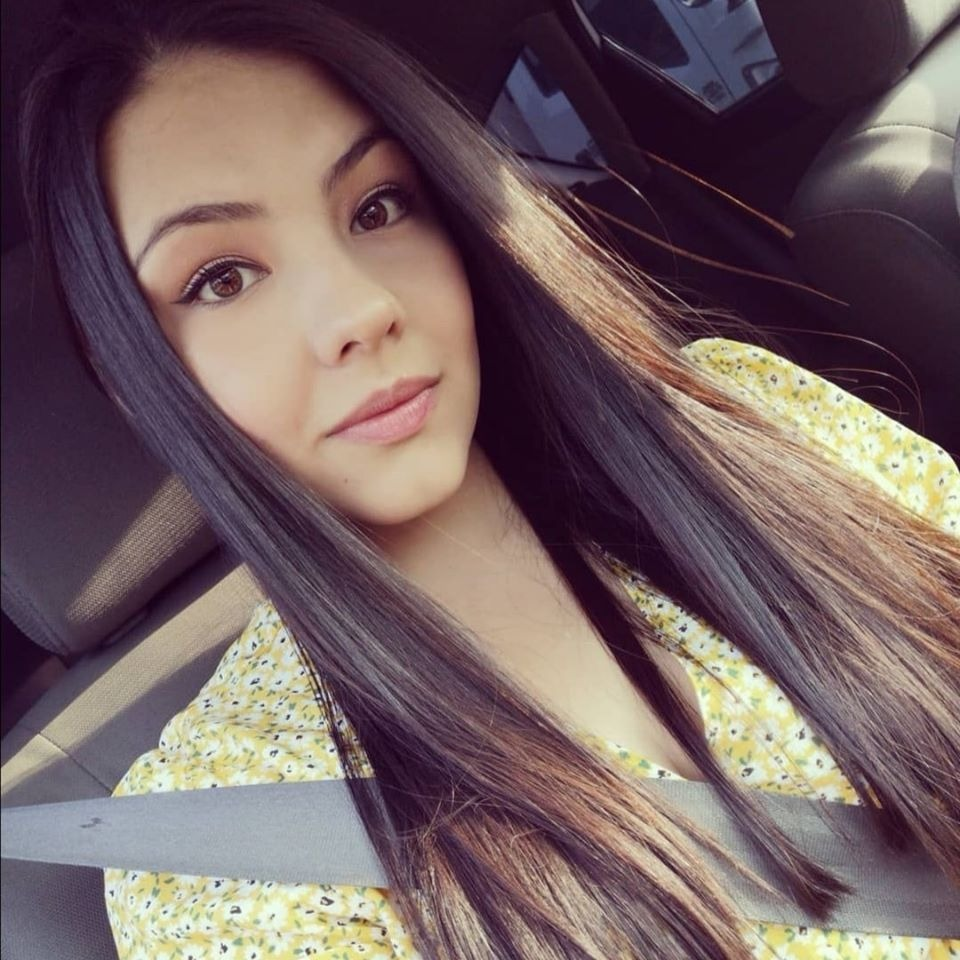
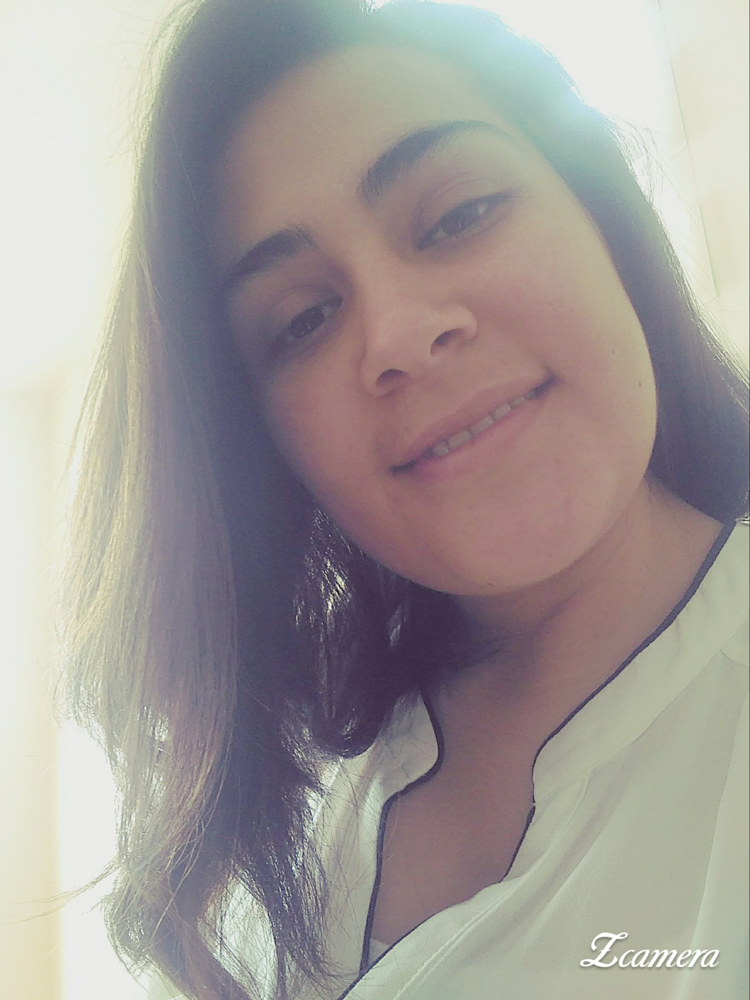
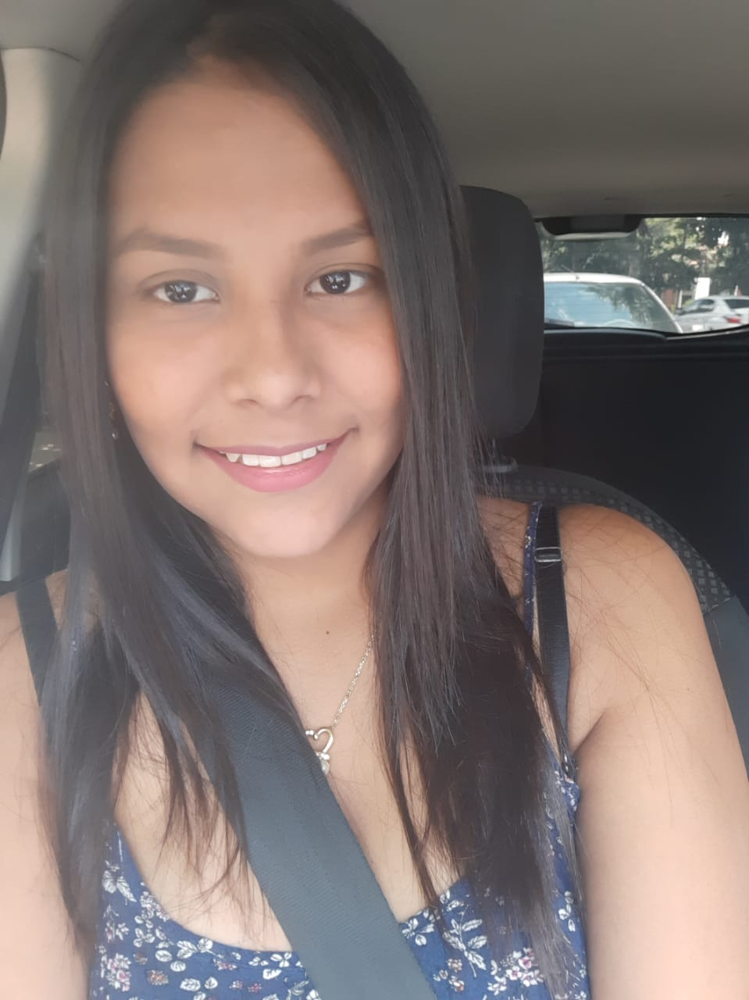
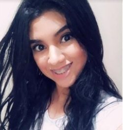

Actualmente me encuentro desarrollando habilidades de programación en el campo de Front End, por medio de la Academia Geek (Makaia en alianza con Agile Innova, E.O)soy una amante de los animales, del arte, de la música y fotografía.
LUISA VILLA
Tecnóloga en gestión de redes de datos, apasionada por las cosas nuevas, abierta al aprendizaje y actualmente profundizando mi conocimiento en el desarrollo de software.


YERALDITH CAMARGO
Soy una mujer analítica y perseverante, en la actualidad estoy incrementado y profundizando mis conocimientos con un curso intensivo con énfasis front end.


LAURA VARGAS
Soy estudiante de desarrollo front end de la academia geek en acompañamiento y aliada Agile innova mi meta es aprender mucho sobre sobre front end